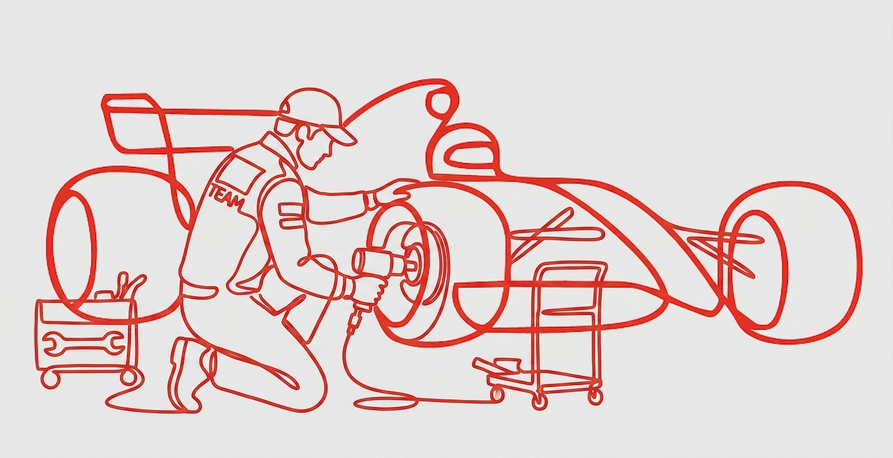
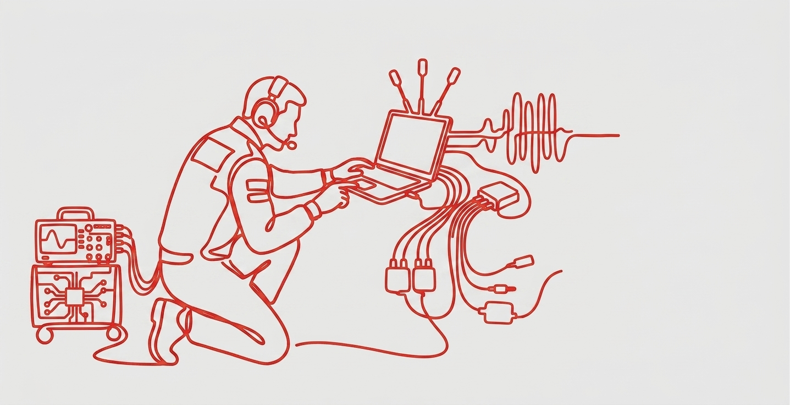
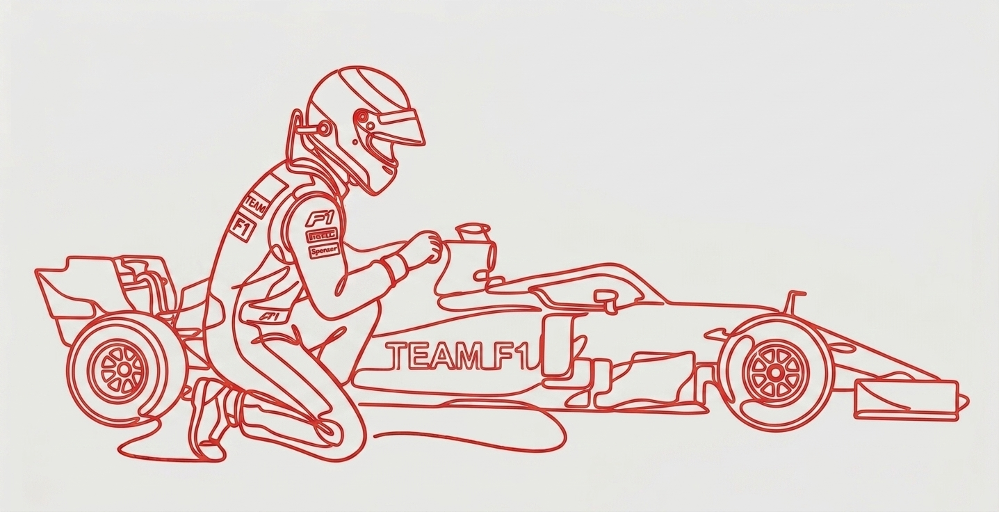
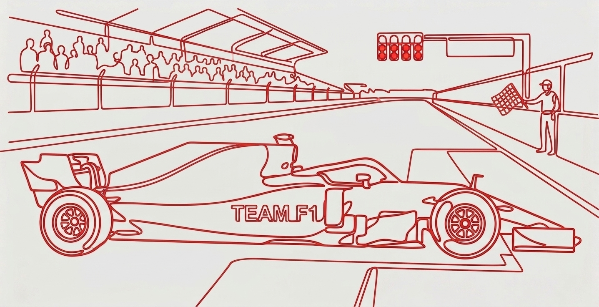

Race career
Dans le système de progression chaque actions (les différentes simulations) que tu fais te rapporte des points Au plus tu es performant au plus tu va pouvoir monter de niveaux. Si tu participes régulièrement aux simulations tu peux obtenir des points bonus. Il y a un classement général de tous les participants et en fonction du classement il y a différentes récompenses à la clé comme des places VIP pour un grand prix, des accès aux paddocks, faire le tour du circuit avant la course (track wall) avec une écurie (le pilote et l’ingénieur), participer à la parade des pilotes (quand les pilotes font le tour de piste d’avant le grand prix)
01. Le rôle du mécano
Mini jeu de pit stop (arrêt au stand) pour changer les 4 pneus le plus rapidement possible avec un équipe de +/- 20 personnes et souvent en moins de 2,5 secondes sauf si problème ou pénalités. Et alors essayer de battre le record qui est de 1,8 seconde réaliser par McLaren en 2023
La gestion des imprévu comme la météo, il faut être actif pour changer les pneus en préparation si il commence à pleuvoir
La gestion du timing des arrêts, il faut être coordonner et concentrer sur sa tache pour que ça aille le plus vite possible
Après avoir réussis 4 simulations en tant que mécanos ça vous donne un accès prioritaire au niveau ingénieur

02. Le rôle de l'ingénieur
La gestion des arrêts dans la nouvelle réglementation il faut utiliser deux types de gommes différentes donc d’office un arrêt, si il y a une safety car on perd moins de temps au stand car les autres sont au ralenti.
Deux options pour dépasser son concurrent soit Undercut (rentrer avant lui pour avoir les pneus neuf et alors le dépasser quand le concurrent ira au stand) ou Overcut (s’arrêter plus tard pour miser sur des pneus plus frais pour la fin du relais)
Le choix des pneus, c’est l’ingénieurs qui a la responsabilité de la course et des pneus car si il fait le mauvais choix la voiture n’avancera pas comme le pilote le voudrais et donc ça peut gâcher la course.
Il faut savoir analyser l’usure des pneus et de l’état de la piste pour savoir quand il faut changer et savoir quels pneu mettre
Tout ça se fait avec une bonne communication avec le pilote, avoir quoi lui demander pour l’usure des pneus, la tenue sur la piste. Savoir aussi à quel moment lui demander pas dans des moments fort de la course comme un virage dangereux ou un dépassement compliquer

03. Le rôle du pilote
Àprès avoir débloqué les deux autres niveaux, tu vas enfin pouvoir accéder au niveau pilote. Dans ce mode, tu incarnes directement le pilote et tu prends le contrôle de la voiture le temps d’un tour complet. L’objectif est de te faire vivre une immersion totale dans les conditions réelles d’une course, en ressentant la vitesse, les virages, les freinages et la précision nécessaire pour rester performant. Cela permet de mieux comprendre les sensations et les contraintes auxquelles un pilote est confronté, tout en découvrant la difficulté de maintenir un rythme constant sur un tour

04. Le tour bonus
Pour une expérience mémorable, tu pourras incarner le pilote à des moments clés de la course, comme le dernier tour, la lutte pour la pole position en qualifications, le départ — où un mauvais envol peut compromettre toute la course — ou encore lors des batailles intenses pour atteindre le podium
